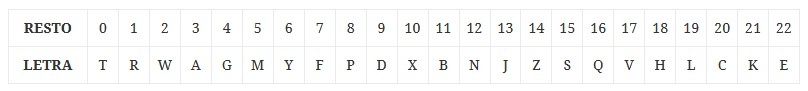

PR0320: Arrays de objetos (I)
Al introducir los datos alguien se olvidó de añadir la letra al DNI. Crea una función addNif(arr) que modifique el array que se le pase añadiendo una propiedad nif que contenga el NIF (DNI+letra) y elimine la propiedad dni.
Para calcular la letra del NIF simplemente hay que calcular el resto cuando se divide el número del DNI entre 23 y se asigna la letra según la siguiente tabla.
